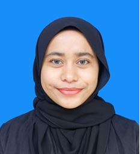

About Me
- Name: Yasmin Dania Binti Junaidi @ Jeffry
- Phone Number: 0183666702
- Date of Birth: 20/12/2002
- Home: I’m currently living in Cyberjaya.
I am a graduate of the Bachelor of Computer Science (Honours) in Multimedia Computing from Universiti Teknologi MARA (UiTM), Jasin Campus, Melaka. My academic journey began at Sekolah Kebangsaan Putrajaya Presint 16(1) (SKPP 16(1)), where I completed my primary education before continuing my secondary education at Sekolah Menengah Kebangsaan Putrajaya Presint 16(1) (SMKPP 16(1)). During my secondary school years, I developed an interest in technology and selected Computer Science, Physics, Chemistry, and Additional Mathematics as my elective subjects. After completing SPM, I continued my studies at Kolej Matrikulasi Selangor in the Physical Science programme, which strengthened my foundation in science, mathematics, and analytical thinking. I then pursued my interest in technology and digital media at UiTM Jasin, where I completed my degree in Multimedia Computing.
Throughout my academic journey, I have developed a diverse combination of technical, creative, and problem-solving skills. I have gained experience in programming and web development using C, C++, HTML, Java, JavaScript, MATLAB, Python, Scratch, and SQL. I have also used Android Studio to develop applications and gained practical experience in working with different development environments and technologies. For multimedia-related projects, I used MATLAB for image processing and temporal media processing, while Anaconda was used as a development environment for Python-based data science projects. These experiences have strengthened my ability to understand technical concepts, solve problems, and apply programming knowledge to practical projects.
In addition to programming, I have experience with 3D development and modelling using Unity and Blender, allowing me to explore interactive applications, digital experiences, and 3D content creation. I have also developed creative and visual design skills using Adobe Photoshop, Adobe Illustrator, and Adobe Animate. These tools have enabled me to work on digital graphics, illustrations, animations, and other multimedia content. My combination of programming and creative skills allows me to approach projects from both a technical and visual perspective.
I am also proficient in using Microsoft Office applications, including Microsoft Word, Microsoft Excel, Microsoft PowerPoint, and Microsoft Access. I am comfortable using these applications for document preparation, data organisation, presentations, and database-related tasks. In terms of language skills, Malay is my native language, while I have an intermediate level of English and a basic level of Mandarin. I can also communicate using Sign Language, which has helped me develop greater awareness of different communication needs and styles.
As a person, I am hardworking, responsible, adaptable, and willing to learn. I am able to adapt to new environments and learn new skills quickly, particularly when working with unfamiliar technologies or tasks. I enjoy taking on new challenges and continuously improving my knowledge and abilities. I am also comfortable working independently as well as collaborating with others to achieve shared goals. I believe that my combination of technical knowledge, creativity, willingness to learn, and adaptability will allow me to contribute positively to a professional working environment.
As a Multimedia Computing graduate, I am seeking an opportunity to apply my academic knowledge and technical skills in a professional setting. I am particularly interested in opportunities that allow me to work with technology, multimedia, software development, digital content, or interactive applications. I am open to learning new technologies and taking on new responsibilities, and I look forward to growing professionally while contributing my skills, creativity, and dedication to the organisation.
Throughout my academic journey, I have developed a diverse combination of technical, creative, and problem-solving skills. I have gained experience in programming and web development using C, C++, HTML, Java, JavaScript, MATLAB, Python, Scratch, and SQL. I have also used Android Studio to develop applications and gained practical experience in working with different development environments and technologies. For multimedia-related projects, I used MATLAB for image processing and temporal media processing, while Anaconda was used as a development environment for Python-based data science projects. These experiences have strengthened my ability to understand technical concepts, solve problems, and apply programming knowledge to practical projects.
In addition to programming, I have experience with 3D development and modelling using Unity and Blender, allowing me to explore interactive applications, digital experiences, and 3D content creation. I have also developed creative and visual design skills using Adobe Photoshop, Adobe Illustrator, and Adobe Animate. These tools have enabled me to work on digital graphics, illustrations, animations, and other multimedia content. My combination of programming and creative skills allows me to approach projects from both a technical and visual perspective.
I am also proficient in using Microsoft Office applications, including Microsoft Word, Microsoft Excel, Microsoft PowerPoint, and Microsoft Access. I am comfortable using these applications for document preparation, data organisation, presentations, and database-related tasks. In terms of language skills, Malay is my native language, while I have an intermediate level of English and a basic level of Mandarin. I can also communicate using Sign Language, which has helped me develop greater awareness of different communication needs and styles.
As a person, I am hardworking, responsible, adaptable, and willing to learn. I am able to adapt to new environments and learn new skills quickly, particularly when working with unfamiliar technologies or tasks. I enjoy taking on new challenges and continuously improving my knowledge and abilities. I am also comfortable working independently as well as collaborating with others to achieve shared goals. I believe that my combination of technical knowledge, creativity, willingness to learn, and adaptability will allow me to contribute positively to a professional working environment.
As a Multimedia Computing graduate, I am seeking an opportunity to apply my academic knowledge and technical skills in a professional setting. I am particularly interested in opportunities that allow me to work with technology, multimedia, software development, digital content, or interactive applications. I am open to learning new technologies and taking on new responsibilities, and I look forward to growing professionally while contributing my skills, creativity, and dedication to the organisation.